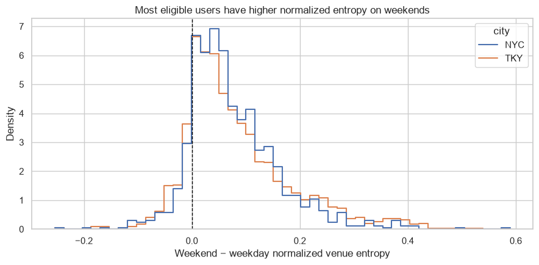
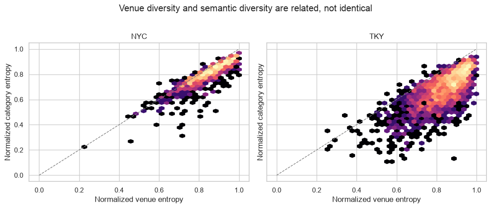
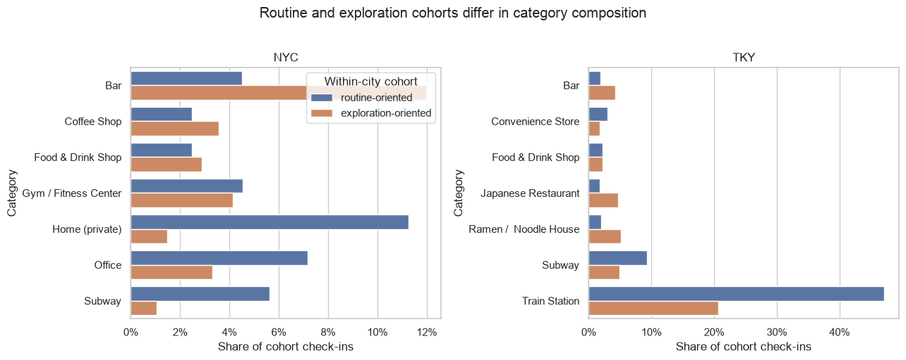

When: weekday versus weekend
Recalculate entropy independently within (city, user, context). Compare only users with at least 20 clean check-ins in both contexts. Because weekday and weekend scores belong to the same user, the unit is the paired delta:

Threshold and bootstrap
The 20-per-context rule reduces extremely unstable estimates but is pragmatic, not theoretically guaranteed. Exclusions are reported: 64 NYC and 151 Tokyo. For uncertainty, the notebook resamples user-level deltas with replacement 10,000 times, computes each sample median, and takes the 2.5th/97.5th percentiles. Fixed seed makes this reproducible.
The 95% intervals—NYC 0.053–0.062, Tokyo 0.055–0.063—describe bootstrap uncertainty conditional on these eligible observed users. They do not repair selection bias or prove population generality.
What kind: venue versus category
Venue entropy asks whether events spread across physical venue IDs. Category entropy repeats the metric on event-level category_id, asking about semantic variety.

Tokyo can have similarly high venue diversity while events remain concentrated within fewer activity types. Equal venue entropy does not imply equal user needs; that insight directly shapes the product proposal.
Composition: relative cohorts
Within each city, bottom quartile = routine-oriented; top quartile = exploration-oriented; middle half = mixed. City-specific cutoffs avoid mixing sample/taxonomy differences into cohort assignment. Labels describe observed events, not people.

How robust: exclude Home (private)
NYC median normalized venue entropy rises 0.853 → 0.866; Tokyo 0.860 → 0.862. Median user-level change is zero because most users have no home event. The broad two-city conclusion survives, though aggregate impact is larger in NYC.
Retrieve
Why is the temporal analysis paired?
What does category entropy add?
Primary sources
Executed notebook, sections 5–8 · Penn State on paired samples · SciPy bootstrap interpretation.